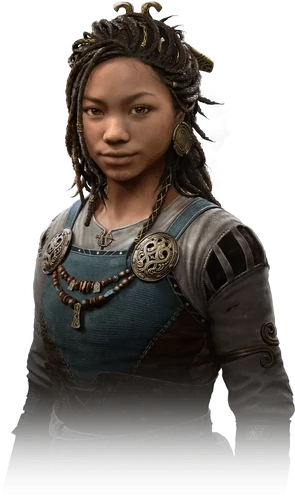

Angrboda bir Jötunn'dur , Loki'nin en iyi arkadaşı ve sevgisidir ve Fenrir'in şu anki sahibidir .İskandinav mitolojisinde Angrboða veya Angrboda dişi bir jötunn'dur. Şiirsel Edda'da Angrboða'dan yalnızca Völuspá hin skamma'da Loki tarafından Fenrir'in annesi olarak bahsedilir.Keder kadını olarak da biliniyordu.Aesir Tanrıları tarafından Jötnar soykırımından kurtulanlardan biridir .
|  | |
| Genel Bilgi | |
|---|---|
| Takma Ad | |
| Cinsiyet | Dişi |
| Doğum Yeri | Jötunheim |
| Irk | Jötunn(Don Devi) |
| Ek Bilgi | |
| Aile | |
| Bağlılıklar | |